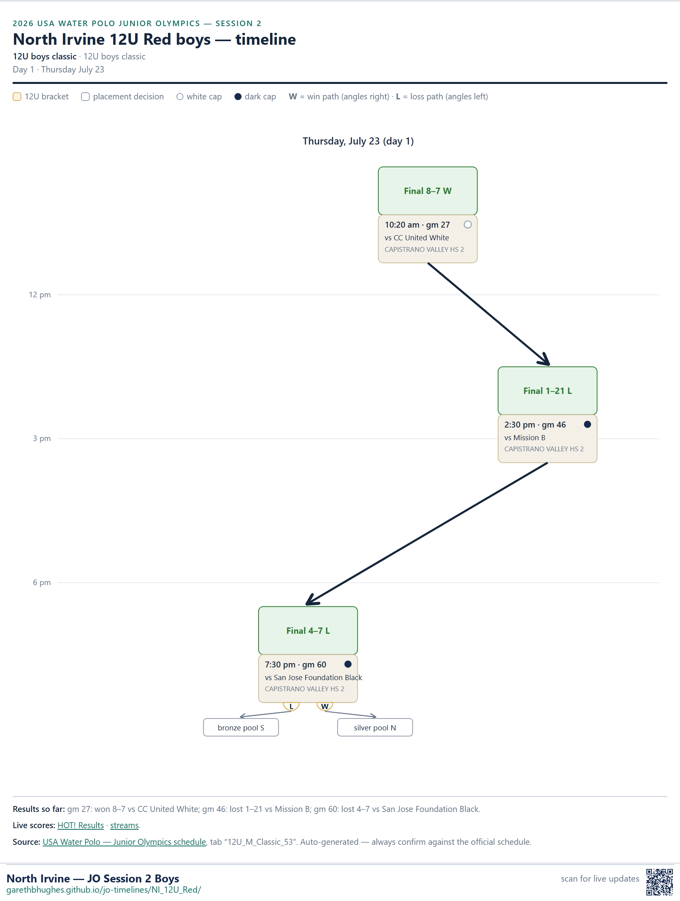

12U boys classic ·
Last verified against the master schedule at Saturday July 25, 8:49 PM
Next game
vs Park City
When
Sunday July 26 · 9:00 am
Deck
8:00
Where
GOLDEN WEST COLLEGE 2
Caps
white caps
Game
#190
Scouting report: Park City (seed 44) is 1–3 in this session so far — beat Santa Barbara Wpc B 9–7; lost to Carlsbad A 1–19; lost to Lamorinda B 7–15; lost to La Jolla United B 4–10. They're averaging 5.8 goals for and 11.8 against.

Change log
Game 169 set: vs Stanford White, 7:00 am at TUSTIN HS 2.
Game 192 set: vs LA Jolla United B, 10:00 am at GOLDEN WEST COLLEGE 2.
Game 169 set: vs Stanford White, 7:00 am at TUSTIN HS 2.
Game 192 set: vs LA Jolla United B, 10:00 am at GOLDEN WEST COLLEGE 2.
Game 170 set: vs Lamorinda B, 8:00 am at TUSTIN HS 2.
Game 192 set: vs loser of gm 164, 10:00 am at GOLDEN WEST COLLEGE 2.
Game 163 score updated (vs CC United White).
Game 190 set: vs Park City, 9:00 am at GOLDEN WEST COLLEGE 2.
Game 169 set: vs winner of gm 164, 7:00 am at TUSTIN HS 2.
Game 170 set: vs Lamorinda B, 8:00 am at TUSTIN HS 2.
Game 190 set: vs loser of gm 155, 9:00 am at GOLDEN WEST COLLEGE 2.
Game 116 score updated (vs Carlsbad B).
Game 138 score updated (vs CC United White).
Game 150 score updated (vs 680 White).
Game 163 set: vs CC United White, 4:20 pm at GOLDEN WEST COLLEGE 2.
Game 169 set: vs winner of gm 164, 7:00 am at TUSTIN HS 2.
Game 170 set: vs Lamorinda B, 8:00 am at TUSTIN HS 2.
Game 190 set: vs loser of gm 155, 9:00 am at GOLDEN WEST COLLEGE 2.
Game 116 score updated (vs Carlsbad B).
Game 138 score updated (vs CC United White).
Game 150 score updated (vs 680 White).
Game 163 set: vs CC United White, 4:20 pm at GOLDEN WEST COLLEGE 2.
Game 138 set: vs CC United White, 11:20 am at GOLDEN WEST COLLEGE 2.
Game 150 set: vs 680 White, 1:00 pm at GOLDEN WEST COLLEGE 2.
Game 203 set: vs Yolo, 7:00 am at OCEAN VIEW HS 2.
Game 116 set: vs Carlsbad B, 9:40 am at GOLDEN WEST COLLEGE 2.
Game 131 set: vs Texas Thunder, 9:40 am at LAGUNA HILLS HS.
Game 203 set: vs 3rd in bronze pool M, 7:00 am at OCEAN VIEW HS 2.
Game 111 score updated (vs Orwp RED).
Game 135 set: vs bronze pool V, 11:20 am at OCEAN VIEW HS 2.
Game 132 set: vs bronze pool V, 1:50 pm at OCEAN VIEW HS 2.
Game 116 set: vs 1st in bronze pool M, 9:40 am at GOLDEN WEST COLLEGE 2.
Game 131 set: vs 2nd in bronze pool M, 9:40 am at LAGUNA HILLS HS.
Game 97 score updated (vs American River).
Game 81 score updated (vs Foothill Black).
Game 97 set: vs American River, 2:30 pm at OCEAN VIEW HS 2.
Game 111 set: vs Orwp RED, 5:50 pm at OCEAN VIEW HS 2.
Game 81 score updated (vs Foothill Black).
Game 97 set: vs American River, 2:30 pm at OCEAN VIEW HS 2.
Game 111 set: vs Orwp RED, 5:50 pm at OCEAN VIEW HS 2.
Results so far: gm 116: lost 2–8 vs Carlsbad B; gm 150: lost 2–11 vs 680 White.